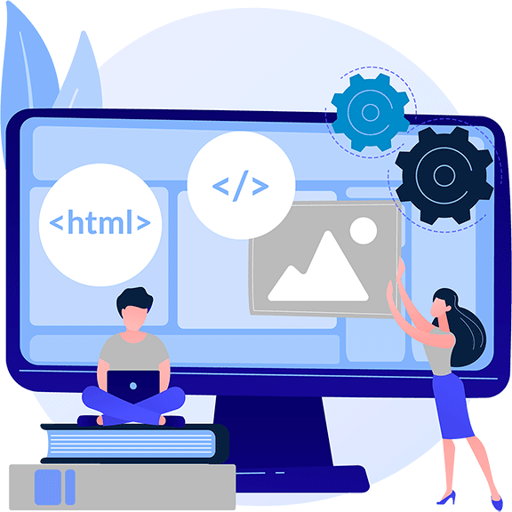

El desarrollador full stack, o también conocido como desarrollador de pila completa, es un profesional que se encarga de llevar a cabo la escala completa del proceso de desarrollo web. Esto significa que cuenta con conocimientos técnicos y habilidades específicas que le ayudan a programar sitios web desde cero. Se caracteriza por ejecutar todo tipo de proyectos y por enfocar sus esfuerzos en crear una experiencia de usuario positiva.
Es importante tener en consideración que el perfil de un desarrollador full stack no implica tener un extenso conocimiento respecto a todas las áreas del desarrollo web. Sin embargo, es esencial contar con una comprensión general respecto a lo que sucede en el front-end y back-end. De esta manera, logra completar proyectos que van desde ajustar la manera en que se procesan los datos hasta revisar los elementos de diseño visual de una plataforma.
TIPOS DE DESARROLLADORES
Desarrollador Front-end
El desarrollador front-end se ocupa de la interfaz de usuario, es decir, todo lo que pueden ver las personas que ingresan en un sitio web. Emplean lenguajes de programación como HTML, CSS y JavaScript para garantizar una excelente interacción, experiencia e interfaz. A menudo, también poseen formación en materia de teoría del color, diseño y las reglas generales de tipografía.
Desarrollador Back-end
Por su parte, el desarrollador back-end es un especialista en la escritura de código, es decir, todo aquello que no ven los usuarios. Elaboran la comunicación entre la base de datos y el navegador para garantizar que el sitio funcione con normalidad. Sus funciones están relacionadas con la funcionalidad de una página o aplicación mediante los principios de codificación.
¿Cómo convertirse en uno?
Para trabajar como full stack developer es necesario contar con una serie de elementos educativos y competencias personales que garantizan la correcta ejecución de tus labores profesionales. También hay programas de licenciatura o cursos que pueden ayudarte durante el proceso de formación. Aquí hay algunos pasos que puedes seguir para convertirte en desarrollador full stack:
- Aprende los lenguajes básicos de programación
- Obten una comprensión general del diseño
- Estudia sobre bases de datos y almacenamiento en caché
- Construye una red profesional
- Encuentra una comunidad en línea
- Forma parte de una organización profesinal
Habilidades de un Diseñador Web
Como cualquier otro profesional, el desarrollador web requiere de una serie de cualidades técnicas y personales para desempeñarse con éxito en su día a día. Muchos de estos elementos pueden perfeccionarse con la práctica y la educación continua. A continuación, mostramos las habilidades duras y blandas de un full stack developer que tienen mayor demanda en el mundo laboral:
Habilidades Blandas
- Resolución de problemas
- Creatividad
- Atención a los detalles
- Comunicación
Habilidades Duras
- Lenguajes de programación
- Bases de datos y almacenamiento web
- HTTP y REST
- Arquitectura Web
Salario promedio de un Desarrollader Full-Stack
Los profesionales de esta industria pueden ejercer en una empresa o convertirse en trabajadores independientes. El salario promedio de un full stack developer en Estados Unidos es de $177,698 al año. No obstante, el rango de ganancias puede variar de acuerdo a diversos factores como el proyecto en el que trabajen, ubicación, experiencia y mucho más.